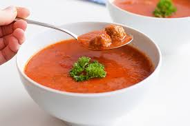

TomatenSoep
Dit TomatenSoep kan prima voor een avondmaaltijd, maar is ook een makelijk gerecht voor een buffet.
Ingrediënten
- 1l water
- 50 gram TomatenPoeder
- 1 blikje tomatenpuree
- 1 doos soepstengels
- 2 tomaten
- 200 gram gehakt
Bereidingswijze
- kook het water
- Snijd de tomaten in kleine stukjes. Doe ze daarna in de pan met kookend water.
- Vervolgens doet u de TomatenPoeder in de pan erbij.
- pak het gehakt en draai er ballentjes van en stop ze daarna in de pan.
- als het water goed rood is dan doet u het tomatenpuree erbij. pak daarna 2 soepstengels.
- Vervolgens maalt u de soepstengels fijn in poeder en stop het in de pan erbij. laat het dan even 5 min koken. Daarba kunt u het serveren.

Tip Lekker met meergranenstokbrood. Voor een minder zout gehaktbrood kun je de bacon weglaten.
Andere Recepten